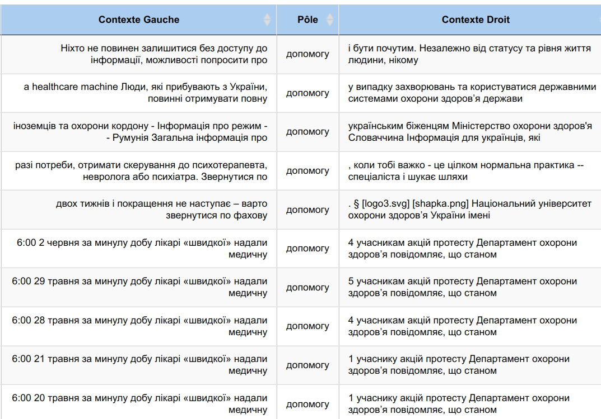
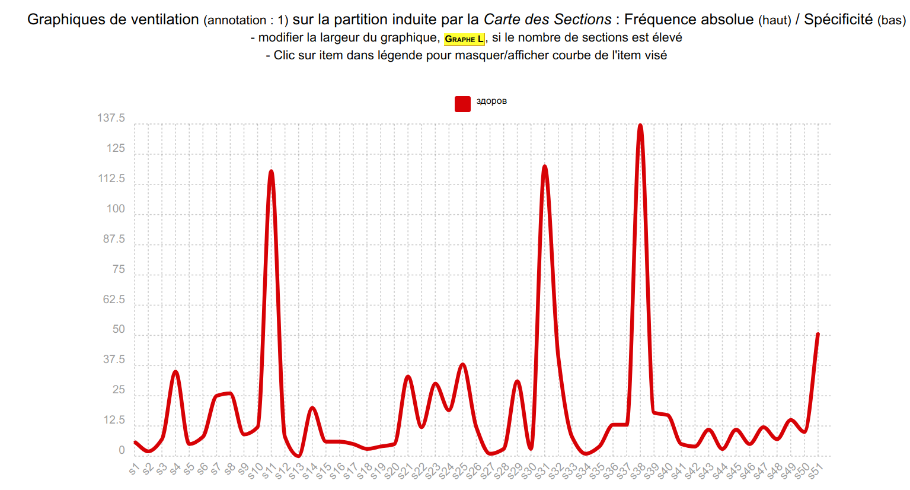

Analyse textométrique des données de l’ukrainien
Partie 1. Fichier Contextes
1. Fréquences dans le dictionnaire
Les mots les plus courants sont « здоров » et « я », qui sont en fait le même mot « здоров’я » (« santé ») et sont séparés par une apostrophe.

En dehors de ces mots, les mots les plus courants sont :

A l’aide du recherche et une expression régulière 20[0-9][0-9], on peut regarder quels années sont répétées les plus dans les textes.
Les plus populaires sont 2023 (évidemment, car il s'agit de l'année en cours) et 2014 (une année de réformes médicales importantes en Ukraine et de la Révolution).
Points clés de cette section :
- Difficulté avec l’apostrophe
- L'abondance de mots grammaticaux
- Les mots fréquents sont typiques pour les journaux et articles médicaux
- Le regex aide a trouver les années mentionnées
2. Concordances
Pour explorer le concordancier, j’ai décidé de choisir un mot « aide » et observer les contextes.
Je suppose que ça sera intéressant de regarder quels mots sont avant et après « les médecins ».

Il s’avère que 94 % (j’ai compté) de concordances incluent la précision « médecins ambulanciers ». Donc, un concordancier permet de comprendre comment ce terme est utilisé dans divers contextes.
Points clés de cette section :
- Concordancier est très bon pour voir les contextes
- Pour les langues synthétiques (comme l’ukrainien), il faut chercher les racines de mots sans les terminaisons pour plus de résultats
3. Accroissement Vocabulaire
Le graphe représenterait la croissance cumulative du nombre de mots distincts en fonction du nombre d'occurrences dans le corpus. Il pourrait donner une idée de la richesse du vocabulaire utilisé dans le corpus et montrer comment de nouveaux mots sont ajoutés à mesure que le corpus se développe.

Points clés de cette section :
- Axe X (Nombre d'occurrences dans le corpus) : Il s'agit du nombre de fois que ces mots uniques apparaissent dans le corpus.
- Axe Y (Nombre de formes) : Il s'agit du nombre total de mots distincts ou de formes lexicales uniques que l'on a rencontrés jusqu'à un certain point dans le corpus.
4. Ventilation
Empiriquement, j'ai constaté que cet outil détecte le nombre de mentions d'un mot particulier dans un fichier distinct et crée un graphe. Prenons, par exemple, la racine du mot santé avant l’apostrophe (« здоров »).
Selon ce graphe, on trouvera que beaucoup d’occurrences du santé apparaissent dans le 11e fichier. Pour vérifier, jetons un coup d’oeuil sur la colonne « occurrences » dans le tableau.

Oui, l’hypothèse est correcte : 117 occurrences, le pic.
Points clés de cette section :
- Cet outil est parfait pour observer les fluctuations dans l'utilisation du mot sélectionné dans l'ensemble des textes.
- Le corpus peut être divisé incorrectement - sur mon corpus il y a 50 fichiers, mais sur le graphe on voit 51. Ça signifie qu’un fichier était coupé en 2 parties.
Partie 2. Fichier Dumps-text
5. Dictionnaire
Par curiosité, j'ai décidé d'analyser les mots du fichier dumps-text. Cela s'est avéré très intéressant, car dans ce cas, le mot n'a pas été coupé avant l'apostrophe, mais il y a deux versions du même mot avec des apostrophes différentes (courbe et droite).

6. Fouille – Section
En effectuant une analyse de texte, nous avons la capacité de repérer l'emplacement de certains termes en fonction des fichiers. Comme ça, nous pouvons ainsi déterminer si le terme recherché apparaît sur l'ensemble des URL ou seulement sur quelques-unes. Je recherche la distribution du mot « здоров’я » avec l’apostrophe courbe…
...et avec l’apostrophe droite.
Enfin, pour comparaison, je voudrais chercher «здоров» sur le fichier Contextes.
7. Cooccurrences
Le mot santé a beaucoup de cooccurences. Je vois ici les mots comme «охорони»(soins), «психічного»(psychique), «ментального»(mental), «сфері»(domain), «станом»(état), «департамент»(département), «Всесвітній»(mondial).

>Voilà la liste des mots frequents.
Pour comprendre quel type du santé est mentionné le plus souvent, il faut chercher les occurrences de «психічне»(psychique), «ментальне»(mental), «фізичне»(physique).
Les cooccurrences de « psychique » :

Les cooccurrences de « mental » :

Les cooccurrences de « physique » :

Ces graphiques montrent que les Ukrainiens écrivent et lisent le plus souvent sur la santé psychique et mentale, et ensuite sur la santé physique.
Les associations de la santé psychique incluent tels mots que « émotionnante », « soutien », « stress », « bien-être », « adolescents », « sociale ». La santé mentale est liée aux mots « monde », « panukrainien », « programmes ». Et enfin, la santé physique est utilisée avec les lexemes « état », « sociale », « complète », « psychique ». Les contextes de tous les trois sont plutôt positifs ou neutres.
CONCLUSIONS
L'analyse textométrique des données ukrainiennes offre une vision approfondie des tendances linguistiques et des thèmes récurrents. Cependant, plusieurs problèmes notables ont émergé au cours de cette exploration. Premièrement, la présence de mots collés sans espaces pose des défis significatifs lors de la tokenisation. Cette particularité complique l'identification et la séparation des mots individuels, impactant potentiellement la précision des analyses ultérieures. Deuxièmement, la différence entre les apostrophes, relevée notamment dans le fichier "Dumps-text", se révèle être un aspect crucial. La variabilité des apostrophes, qu'elles soient courbes, droites, ou étranges, ajoute une complexité à l'analyse lexicale et nécessite une approche plus nuancée pour capturer correctement la quantité des mots. En dépit de ces défis, l'exploration des fréquences, des concordances, de l'accroissement vocabulaire, de la ventilation, et des cooccurrences a permis de dégager des tendances importantes. La compréhension des contextes d'utilisation des mots clés, notamment dans le domaine médical, a été enrichissante. Ainsi, bien que ces problèmes linguistiques nécessitent une attention particulière, cette analyse constitue une première étape pour décrypter les spécificités du langage ukrainien dans ce corpus particulier.